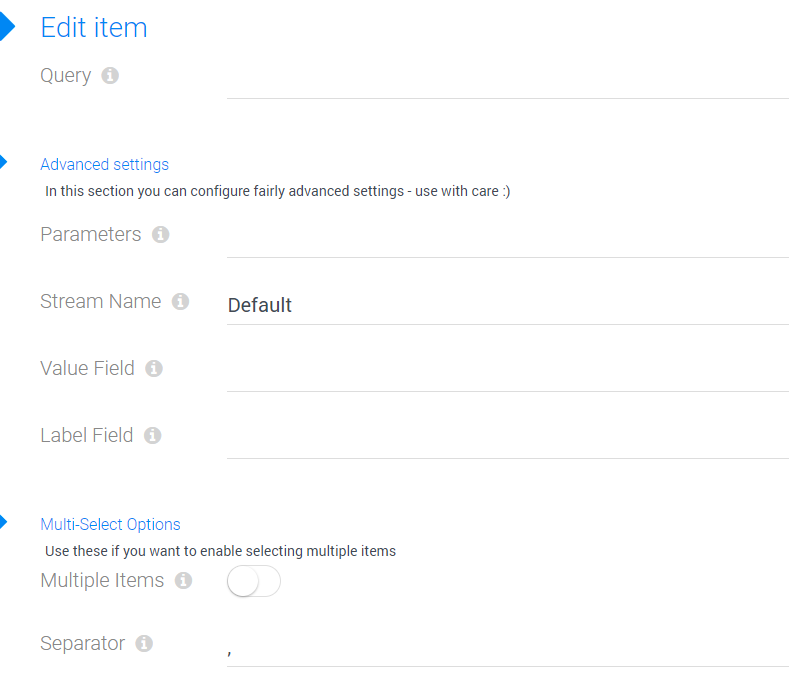

Field Input-Type string-dropdown-query
Use this field type for configuring a dropdown UI elements, storing string/text data. It's an extension of the string field type.
The special thing about this is that the items shown for selecting are retrieved from Query and not pre-defined as part of the the field definition. This allows you to look up any kind of data and offer it for selection.
Features
- provide values to select from a query
- optionally provide query parameters
- optionally use tokens in query-parameters, to pass on values from other fields in the form
- provide visible labels which are different from the stored value
- you can configure which field is stored (like an ID etc.)
- you can configure which field is shown visible in the drop-down
- data is semi-lazy loaded, so the query is only hit again, if the dropdown is opened after parameters change
- optionally allow users to type in something different, in scenarios where this is important
Configuring a String-Dropdown-Query
This shows the configuration dialog:
- Query the name of the query to use
- Advanced
- Parameters a string like country=Switzerland or country=[Country] to parameterize the query
- Stream Name the stream name, in case you don't want the Default stream
- Value Field the value which is stored - basically the field you want in your string at the end
- Label Field the label which is shown - basically for nice display in the UI
- Multi-Select
- Multiple Items enable this if you want to allow multi-select
- Separator the character which will separate the selected items, like "company1,company2,company3"
Cascading Dropdowns
Dropdown-Fields can be cascaded - so that a selection on one dropdown changes the list of possible items on another dropdown. You'll have to work with the Parameters to get this to fly. S
Special Behavior
- When the drop-down UI element finds data stored, which doesn't match any of the values it has available, it will leave that data intact unless the users selects something manually
History
- Introduced in EAV 4.5 2sxc 9.11
- Enhanced with options to allow edit/delete in 10.20